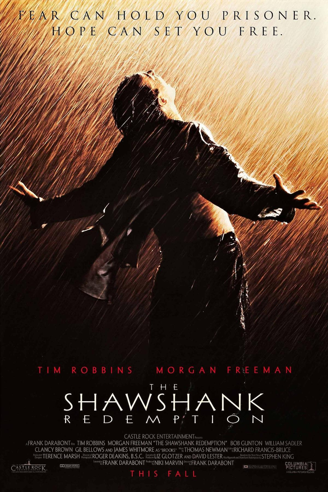

The Shawshank Redemption is a powerful prison drama about hope, patience, and quiet resilience. It follows Andy Dufresne, a banker wrongly convicted of murder, and his long friendship with fellow inmate Red as they navigate life inside Shawshank Prison. The film stands out for its slow-burn storytelling and emotional depth rather than action. It builds a strong sense of atmosphere and gradually shows how hope can survive even in harsh, dehumanizing conditions. Tim Robbins and Morgan Freeman give understated but very memorable performances that carry much of the film’s emotional weight. Overall, it’s widely regarded as one of the best films ever made because of its uplifting message, strong character development, and satisfying ending.
